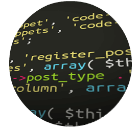
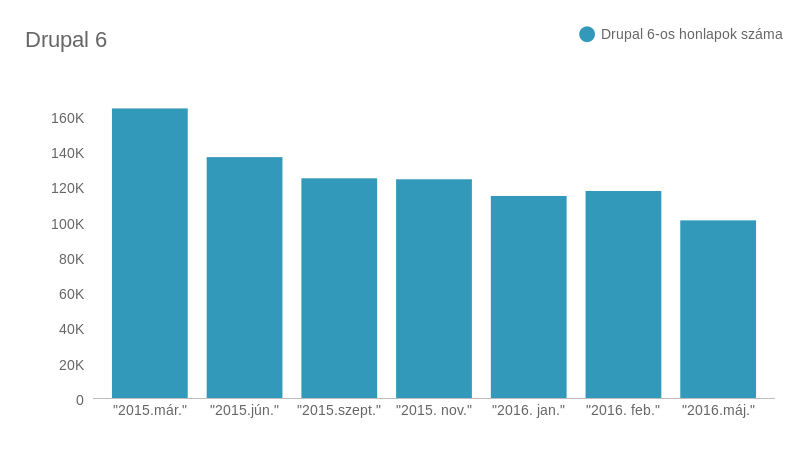

A honlapom még drupal 6:
Mit tudok tenni?

Segesvári Dávid (segi)
Cheppers
@segi67
Dupal 6 RIP!
(2008 - 2016)
Drupal 6 honlapok száma

OK, de a honlapom még Drupal 6 alatt fut!
- Sokféle modul elérhető
- Stabil
- Kisebb a változás Drupal 6 és 7 között
- A reszponzív sminkek nem támogatja a core
- Beállítások a konfigurációs fájlokban
- Hosszabb támogatotság
- Új funkciók nem lesznek elérhetőek a frissítésekkel
- Teljesítmény növekekés(PHP 7 kopatibilitás, HipHop php)
- Újabb funciók ékeznek a frissítésekkel
- Hosszabb támogatotság
- Reszponzív sminkek
- Sok Drupal 7-es module még nem elérhető vagy nem stabil
- Kevesebb leírás és szaktudás
- API szinten nagyobb változás, ezáltal többet kell tanulni
- 1. Views - Drupal 8 része
- 2. Ctools - Drupal 8 része
- 3. Token - 8.x-1.0-alpha2
- 4. Pathauto - 8.x-1.0-alpha3
- 5. Libraries API - Nem elérhető
- 9. jQuery Update - Drupal 8 része
- 14. Google Analytics - 8.x-2.0
- 15. Wysiwyg - Drupal 8 része
- 19. Metatag - 8.x-1.0-beta8
- 21. Rules - 8.x-3.0-alpha1
- 23. Views Slideshow - 8.x-4.0
Upgrade path
Migráció Drupal 6-ről 7-re
Migráció Drupal 6-ról 8-ra